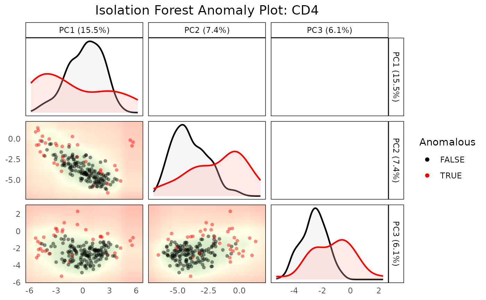

PCA Anomaly Scores via Isolation Forests with Visualization
Source:R/detectAnomaly.R, R/plot.detectAnomalyObject.R
detectAnomaly.RdThis function detects anomalies in single-cell data by projecting the data onto a PCA space and using an isolation forest algorithm to identify anomalies.
This S3 plot method generates visualizations for anomaly detection results.
If PCA was used (pc_subset is numeric), it generates faceted scatter plots for the principal components.
If highly variable genes (HVGs) were used (pc_subset is NULL), it generates a ComplexHeatmap of the HVGs.
Usage
detectAnomaly(
reference_data,
query_data = NULL,
ref_cell_type_col,
query_cell_type_col = NULL,
cell_types = NULL,
pc_subset = NULL,
n_hvgs = 100,
n_tree = 500,
threshold_method = c("MAD", "absolute"),
mad_multiplier = 2,
anomaly_threshold = 0.5,
assay_name = "logcounts",
max_cells_query = 5000,
max_cells_ref = 5000,
...
)
# S3 method for class 'detectAnomalyObject'
plot(
x,
cell_type = NULL,
pc_subset = NULL,
data_type = c("query", "reference", "both"),
n_tree = 500,
upper_facet = c("blank", "contour", "ellipse"),
diagonal_facet = c("density", "ridge", "boxplot", "blank"),
max_cells_ref = NULL,
max_cells_query = NULL,
draw_plot = TRUE,
...
)Arguments
- reference_data
A
SingleCellExperimentobject containing numeric expression matrix for the reference cells.- query_data
An optional
SingleCellExperimentobject containing numeric expression matrix for the query cells. If NULL, then the isolation forest anomaly scores are computed for the reference data. Default is NULL.- ref_cell_type_col
A character string specifying the column name in the reference dataset containing cell type annotations.
- query_cell_type_col
A character string specifying the column name in the query dataset containing cell type annotations.
- cell_types
A character vector specifying the cell types to include in the plot. If NULL, all cell types are included.
- pc_subset
A numeric vector specifying the indices of the PCs to be included in the plots. If NULL, all PCs in
reference_mat_subsetwill be included. Ignored if HVGs were used.- n_hvgs
An integer specifying the number of highly variable genes to retain when `pc_subset` is NULL. If a query dataset is provided, the top `n_hvgs` are computed for both reference and query, and their union is used. Default is 100.
- n_tree
An integer specifying the number of trees for the isolation forest. Default is 500.
- threshold_method
A character string specifying the method to determine anomaly cutoffs. Options are
"MAD"(Median Absolute Deviation) or"absolute". Default is"MAD".- mad_multiplier
A numeric value specifying the number of MADs above the reference median to use as the cutoff when
threshold_method = "MAD". Default is 2.- anomaly_threshold
A numeric value specifying the absolute threshold for identifying anomalies when
threshold_method = "absolute". Default is 0.5.- assay_name
Name of the assay on which to perform computations. Default is "logcounts".
- max_cells_query
Maximum number of query cells to include in the plot. If NULL, all are plotted. Default is NULL.
- max_cells_ref
Maximum number of reference cells to include in the plot. If NULL, all are plotted. Default is NULL.
- ...
Additional arguments passed to the `isolation.forest` function (PCA) or `ComplexHeatmap::Heatmap` function.
- x
A list object containing the anomaly detection results from the
detectAnomalyfunction.- cell_type
A character string specifying the cell type for which the plots should be generated. If NULL, the "Combined" cell type will be plotted. Default is NULL.
- data_type
A character string specifying whether to plot the "query" data, "reference" data, or "both". Note: "both" is only supported for HVG Heatmaps. Default is "query".
- upper_facet
Either "blank" (default), "contour", or "ellipse" for the upper facet plots (PCA only).
- diagonal_facet
Either "density" (default), "ridge", "boxplot" or "blank" for the diagonal plots (PCA only).
- draw_plot
Logical indicating whether to draw the plot immediately (TRUE) or return the undrawn plot object (FALSE). For heatmaps, FALSE returns a ComplexHeatmap object. Default is TRUE.
Value
A list containing the following components for each cell type and the combined data:
- anomaly_scores
Anomaly scores for each cell in the query data.
- anomaly
Logical vector indicating whether each cell is classified as an anomaly.
- reference_mat_subset
PCA projections of the reference data.
- query_mat_subset
PCA projections of the query data (if provided).
- var_explained
Proportion of variance explained by the retained principal components.
Returns a GGally::ggpairs object for PCA data, or a ComplexHeatmap object for HVG data.
Details
This function projects the query data onto the PCA space of the reference data. An isolation forest is then built on the reference data to identify anomalies in the query data based on their PCA projections. If no query dataset is provided by the user, the anomaly scores are computed on the reference data itself. Anomaly scores for the data with all combined cell types are also provided as part of the output.
**PCA Scatter Plots:** Extracts the specified PCs and generates a `GGally` pairs plot. Lower facets show scatter plots with a background gradient representing anomaly scores. Diagonal facets show distributions, and upper facets show contours/ellipses separated by anomaly status.
**HVG Heatmaps:** Extracts the highly variable genes (HVGs) and generates a `ComplexHeatmap`. Cells are ordered by Dataset (Query vs Reference) and by Anomaly Status (Anomalous vs Non-Anomalous). Gene expression is Z-score scaled across cells for optimal visual contrast.
References
Liu, F. T., Ting, K. M., & Zhou, Z. H. (2008). Isolation forest. In 2008 Eighth IEEE International Conference on Data Mining (pp. 413-422). IEEE.
Author
Anthony Christidis, anthony-alexander_christidis@hms.harvard.edu
Examples
# Load data
data("reference_data")
data("query_data")
# Store PCA anomaly data
anomaly_output <- detectAnomaly(reference_data = reference_data,
query_data = query_data,
ref_cell_type_col = "expert_annotation",
query_cell_type_col = "SingleR_annotation",
pc_subset = 1:3,
n_tree = 500,
threshold_method = "MAD",
mad_multiplier = 2)
# Plot the output for a cell type
plot(anomaly_output,
cell_type = "CD4",
pc_subset = 1:3,
data_type = "query")
